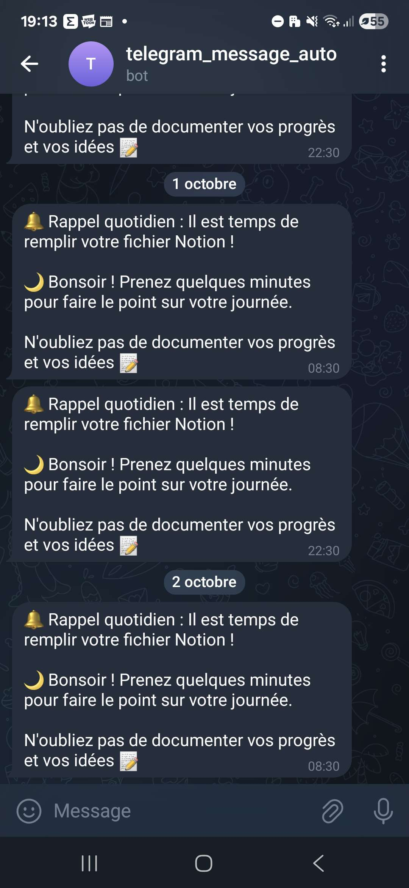

L'IA
L'IA c'est quand même vachement pratique quand t'en a besoin et on peut faire pas mal de trucs avec.
J'avoue que j'ai fait que 2/3 trucs mais je n'ai fait qu'effleurer la surface.
Mes aventures avec l'IA
ChatGPT : Mon assistant de survie
Quand c’est l’apocalypse du code et que la deadline approche à grands pas, ChatGPT est le mec trop cool qui m’aide à debug mes programmes. Que ce soit Python, C#, ou même du C old school, il est là pour dénouer les nœuds et m’éviter des nuits blanches. C’est un peu comme avoir un coéquipier infatigable pour finir un jeu vidéo en mode speedrun.
Bot Telegram : Daily Reminder
J’ai créé un bot Telegram qui m’envoie un rappel quotidien pour remplir un fichier Notion. Totalement automatique, il fait en sorte que rien ne soit oublié, et ça a changé ma manière de m’organiser.

Bot Telegram : Top Actions & ETF
Un autre bot Telegram fonctionne une fois par mois pour m’envoyer les 5 meilleures actions ou ETF à investir, selon certains critères que j’ai définis. Totalement automatique, il me fait gagner un temps fou et permet de rester à jour sans passer des heures à analyser le marché.